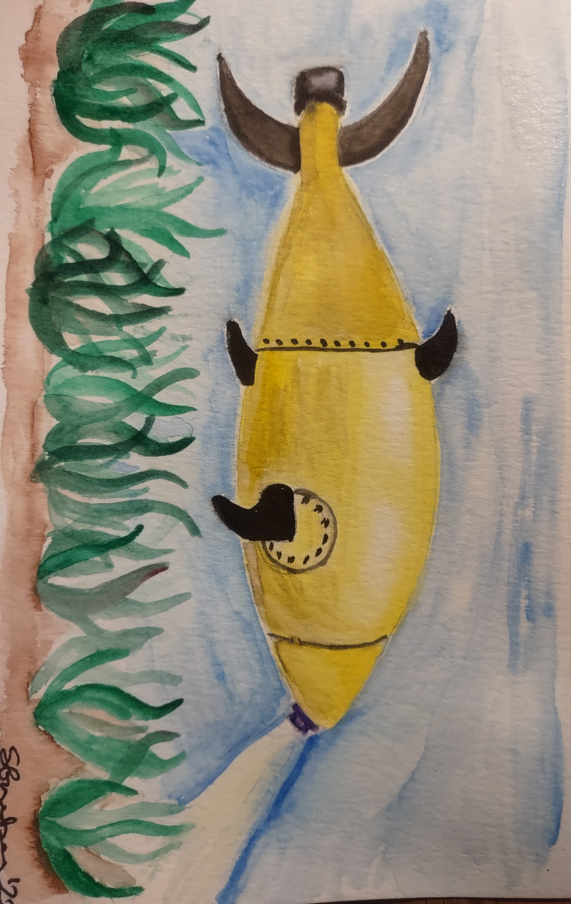

Current AI Projects
Ethical Issues
Proposals for the Future
Home
Current AI Research in Marine Biology
Enter a paragraph about this page
Sustainable Ecosystem Category
Research Projects
Preventing Pollution
Tracking Plastic Waste
Locating Ghost Fishing Gear
Impacts from Climate Change
Tracking Ocean Parameters
Monitoring Coral Health
Protecting Habitats
Detecting and Containing Oil spills
Protecting Species
Monitoring Sperm Whale Migration
Sustainable Fishing
Monitoring Fish Populations
